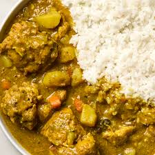
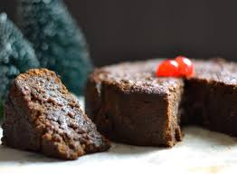
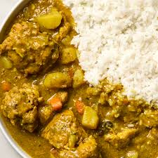
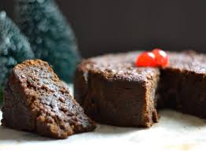

Guyanese cuisine is rich with influences from India, the Caribbean, and the coast, and includes a variety of dishes, such as curries, pepperpot, and black cake Pepperpot Guyana's national dish, a meat stew often made with braised beef, cinnamon, clove, thyme, and wiri wiri peppers. It's traditionally eaten with fresh or cassava bread.Black cake A popular Christmas treat made with nuts, dried fruits, and rum. Curries A popular dish in Guyana, where most types of meat can be curried, including chicken, seafood, goat, lamb, and duck. Fresh fruits and seafood A key part of the diet, especially in rural areas and along the coast. Popular fish include gilbaka, butter fish, tilapia, catfish, and hassa.